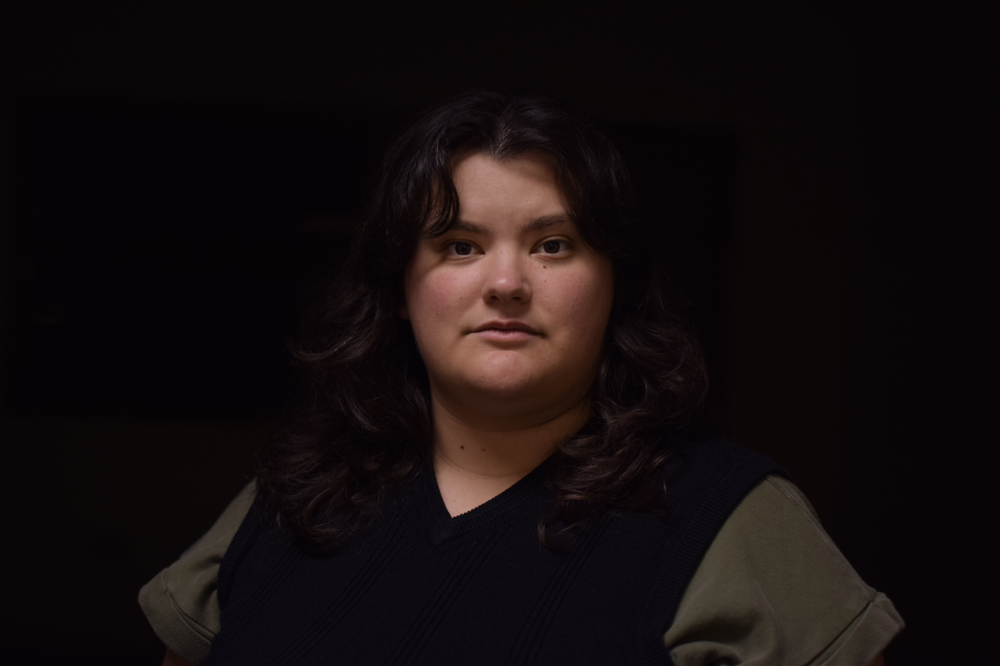
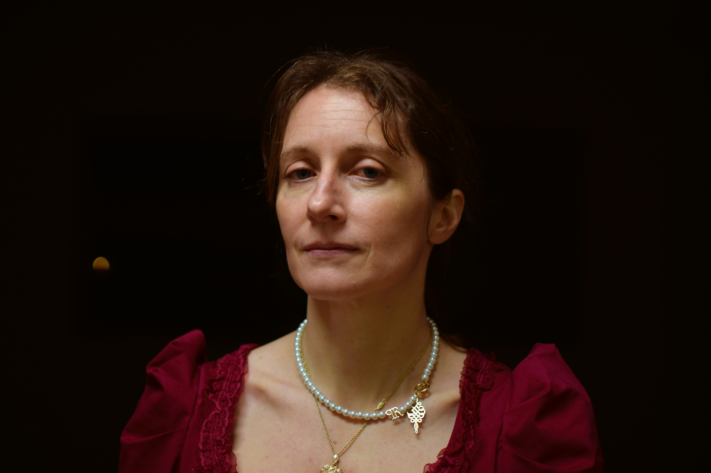
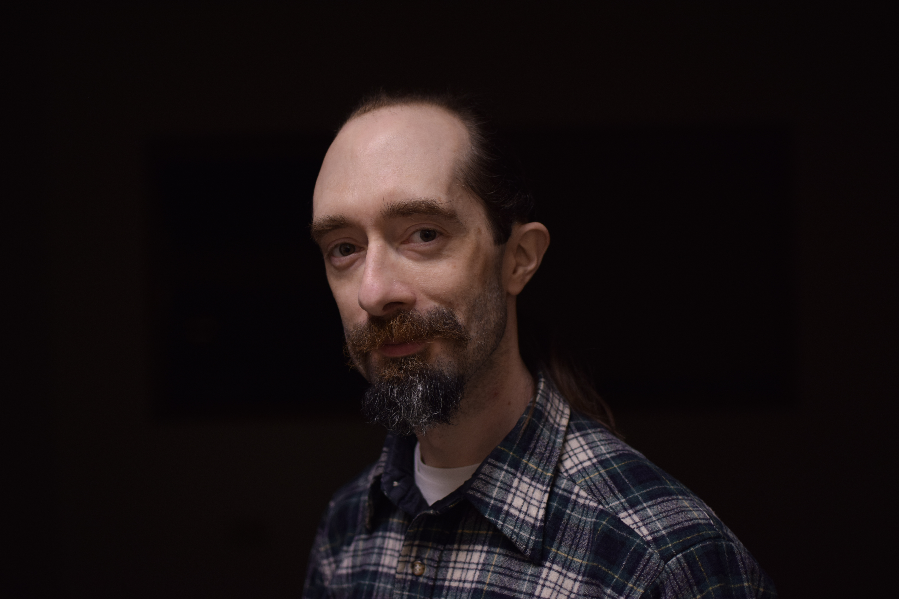
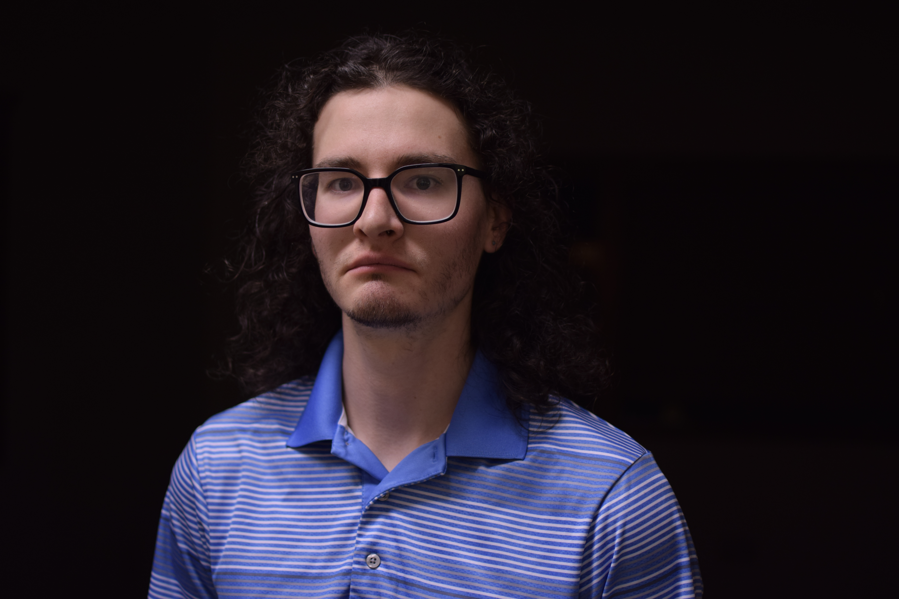
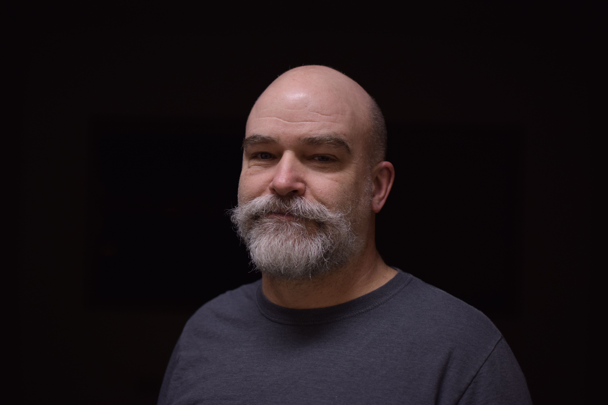
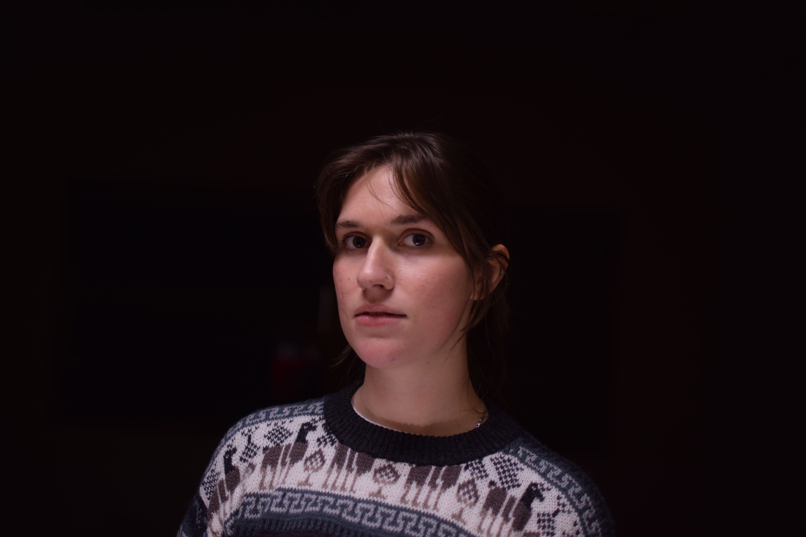
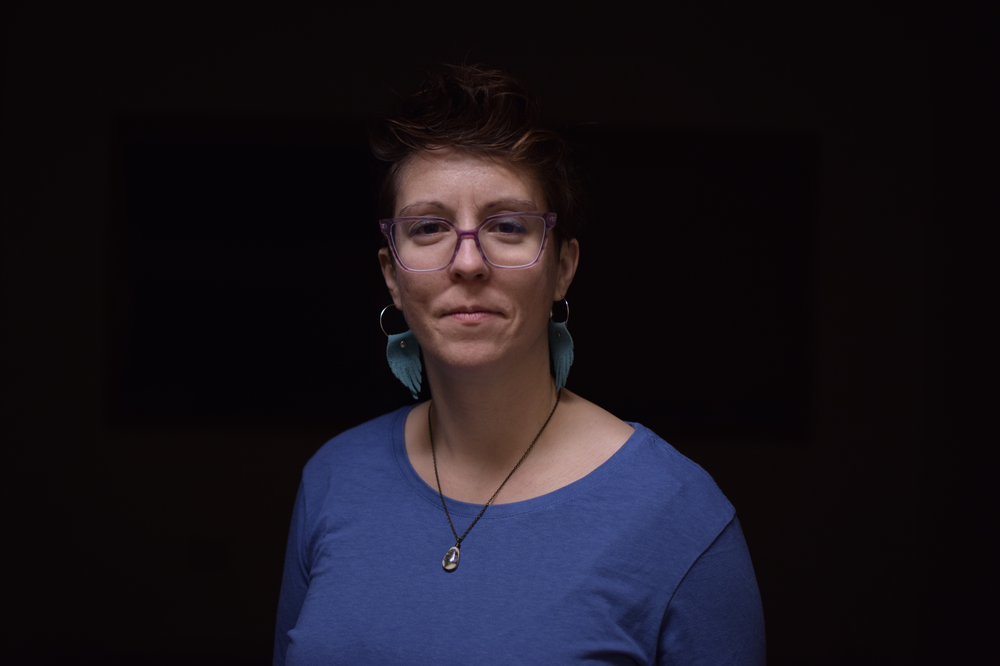
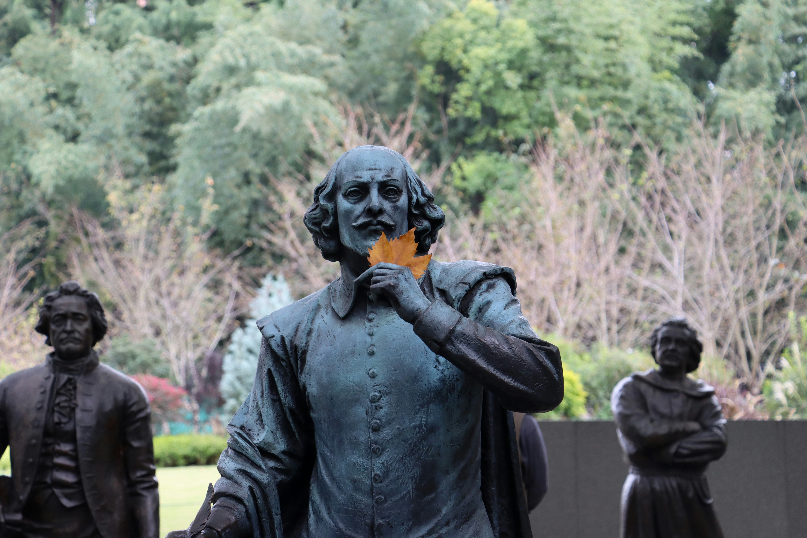

Abby is beyond grateful to everyone who has helped make ICT and Mary Stuart a reality. Previous directing credits include staged readings of The Tamer Tamed (ICT) and Winter's Tale (self-produced), as well as As You Like It (S3), Julius Caesar and William Shakespeare's Star Wars (Bryn Mawr College). As an actor, she was seen on stage this year as Lady Cauplet in Romeo and Juliet (Spokane Civic) and in Five Lesbians Eating a Quiche (Hitchhiker's Theatre). And because she doesn't already wear enough hats, she is also a playwright as well as Artistic Director of ICT.

This is Bri’s second show with Inland Classical Theatre, beginning first with the double show read through Taming of the Shrew and A Tamer Tamed earlier this year. She has been doing theatre since she was a child, both performing and working backstage for CYT. Bri is a recent college graduate of Eastern Washington University’s theatre program, and is excited to be gaining new experience in the theatre community of Spokane.

Jayme is profoundly grateful to ICT for the opportunity to perform as these great ladies. To the cast and crew of Mary Stuart, she offers her thanks and adoration in equal measures. Vince, Waylon and Aezlan, she loves you and apologizes for the at-volume line memorizations of the past few months. Most of all, Jayme thanks her son's cat Apple Crisp for her inspiration in the character development process.
Sydney is overjoyed to be back with Inland Classical Theatre. She recently played Julia in ICT’s The Tamer Tamed. Other roles have included Hero in Much Ado About Nothing, Celia in As You Like It, Viola in Twelfth Night, and Joan of Arc in Saint Joan. She cannot thank Abby enough for giving her this opportunity. She would not be here without her family and friends. Thank you for the lovely bouquet.

Having discovered acting by way of classical ballet, Christopher Lamb has always had an affinity for plays set in periods of history, appearing in productions ranging from works of Shakespeare to The Importance of Being Earnest. He would like to thank director Abby Burlingame for the incredible opportunity to embody such a role as Earl Leicester. “For my part I know nothing with any certainty, but the sight of the stars makes me dream.”

Having been involved in a dozen performances across fourteen years and three different companies, Rab is excited for their ICT debut.
Jeffrey St. George is terribly excited to be playing the role of Burghley in Inland Classical Theatre’s first fully staged production. His other credits include Hamlet in Hamlet, Friar Laurence in Romeo and Juliet, Macbeth in Macbeth and his all time favorite: the Nurse in Romeo and Juliet. When not boldly stepping out of his Shakespeare comfort zone, Jeff has the pleasure of serving as the Executive Director of Inland Classical Theatre.

Jason Young (Paulet) is delighted to make his debut for Inland classical Theater. Jason has graced Spokane stages for 20 years. Some of his favorite roles include Friar Laurance in Romeo and Juliet, Reverand Hale in The Crucible and The Royal Physician in The Nightingale. Most recently Jason was seen on stage at Spokane Civic Theater in Frankenstein and Spokane Stage Left Theater in Ride the Cyclone. Jason Is a Professional Chef and enjoys bicycling, playing the guitar and photography. Jason would like to thank Abby & Bri and the super talented cast of Mary Staurt for this opportunity to play.
Joseph is not sure he exists while he is not on a stage, as he has yet to hear of any confirmed sightings. From what he does know, he has played Demetrius in A Midsummer Night’s Dream, Tybalt in Romeo and Juliet, Laertes in Hamlet, Leonato in Much Ado About Nothing, Adam and Phoebe in As You Like It, and Lucentio/Roland in ICT’s staged reading of The Taming of the Shrew and The Tamer Tamed.
Micah is thrilled to be participating in her first show with Inland Classical Theatre. She has previously performed at Spokane Civic Theatre and Stage Left Theater. She is grateful to be working with this cast and crew and is having the best time! She wishes to thank her husband and spawn for their support and encouragement in all of her theatre endeavors.
Jared is very excited to once again join with his friends at Inland Classical Theatre! His previous roles include Tranio in ICT’s The Taming of the Shrew, Florizel in The Winter’s Tale, Orlando in As You Like It, Don Pedro in Much Ado About Nothing, and Romeo in Romeo and Juliet. When not performing, Jared is a theatre teacher at Post Falls High School, where he is directing The Drowsy Chaperone JR this spring!

Emma is ecstatic to be acting alongside her friends and about being in Inland Classical Theatre’s first fully staged production. She began her acting career last year, playing the role of Wren in Five Lesbians Eating a Quiche followed by The Woman in The Yellow Wallpaper. Off-stage, Emma conducts sleep deprivation neuroscience research for Washington State University.

Carrie is a reporter at the Coeur d’Alene Press and fit in auditioning for Mary Stuart just before getting married back home in New York this fall. She recently appeared in The Taming of the Shrew/The Tamer Tamed with Inland Classical Theatre and in the Bryan Harnetiaux Playwrights’ Forum Festival.
Blake Carlson is excited to help shape the atmosphere of Mary Stuart with Inland Classical Theatre. A theatre generalist, Blake enjoys working across disciplines and is grateful for the creative opportunities the area provides. They thank their lovely partner, Stevie, for the continual love and support. Enjoy the show!
Matthew is excited to be designing sound for ICT and working on Mary Stuart. He is proud to be working on this amazing new theatre company and continuing to grow as an artist in classical works.
Bio Pending
Bio Pending
Jeffrey Ridlington teaches Theatre and English at Lakeside High School. In addition to acting in several Shakespearean productions, most recently Romeo and Juliet at the Spokane Civic Theatre, Jeffrey has served as resident intimacy director for the Spokane Shakespeare Society and Inland Classical Theatre. Jeffrey’s training from Theatrical Intimacy Education helps to create a safe environment for actors. You can see Jeffrey onstage as “Daddy” in Spokane Children’s Theatre’s production of Junie B. Jones.
Bio Pending
